- Why
- People meet us before they speak to anyone
- Goals
- Consistent · Welcoming · Shareable
- Who’s with us
- A family church, from children to seniors
- Who we hope to reach
- Younger people and families, and those new to church
- How it should feel
- At home: warm, inviting, modern in a human way
- What we’re not
- Old-school, edgy, futuristic or exclusive
- A local touch
- A hint of Penang, where it fits
FGA Centre Identity Refresh
Info
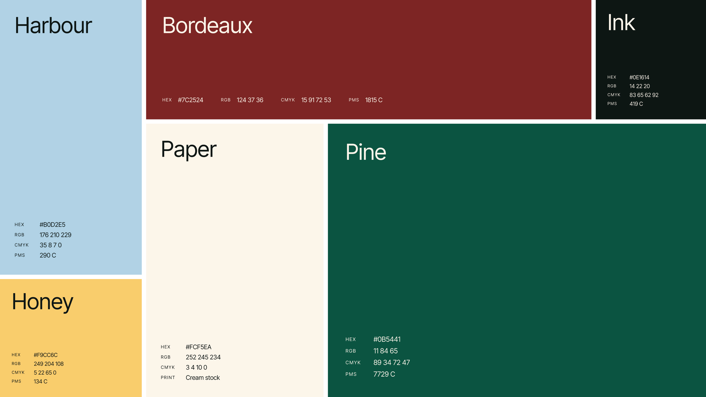
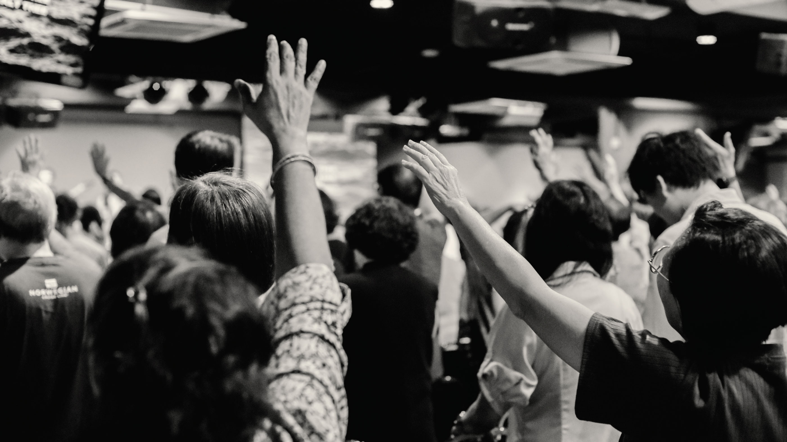
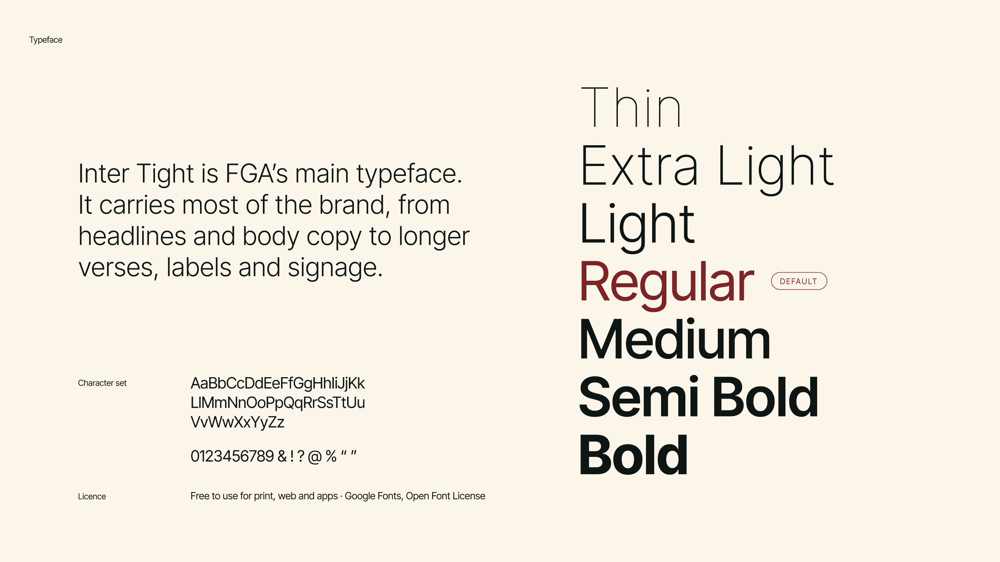
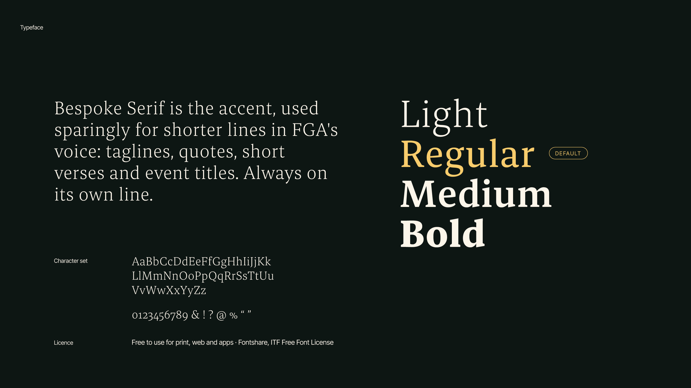
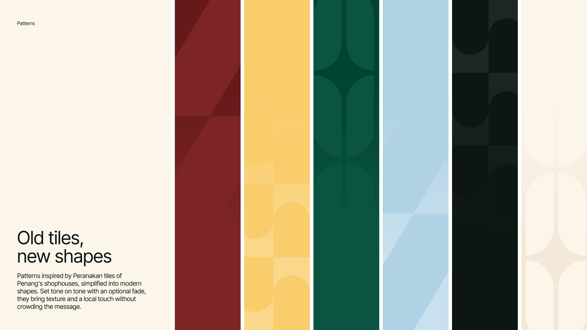
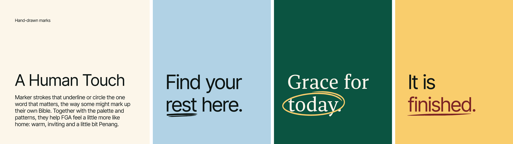
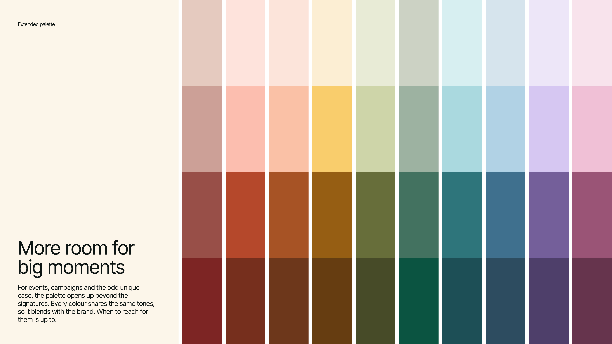
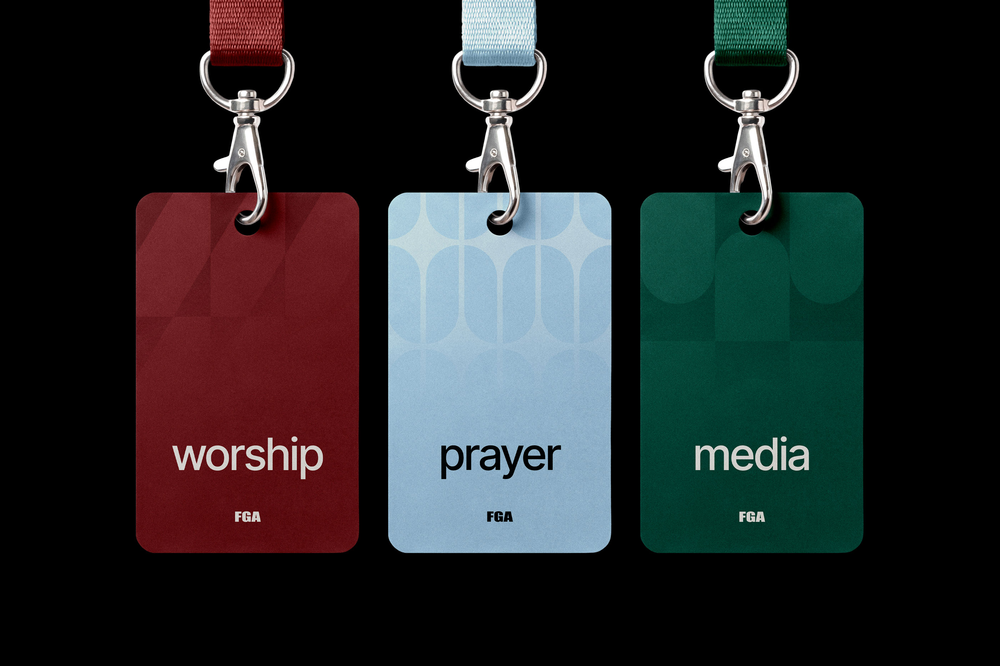
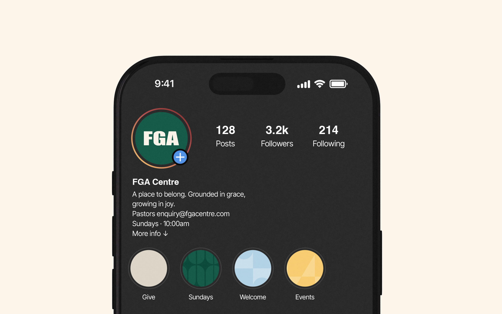
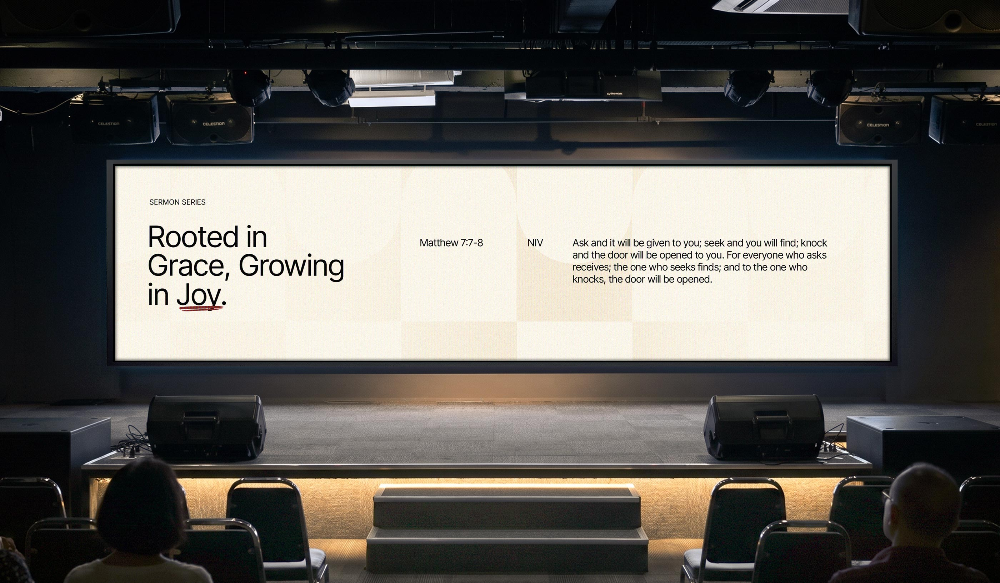
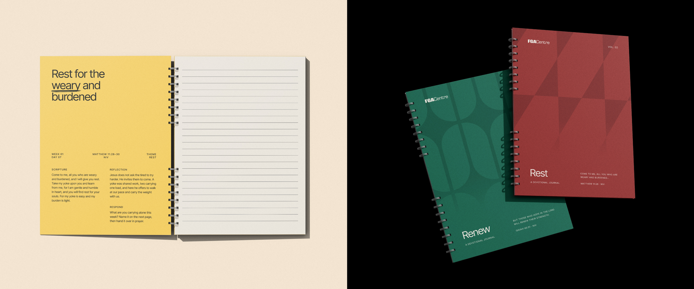
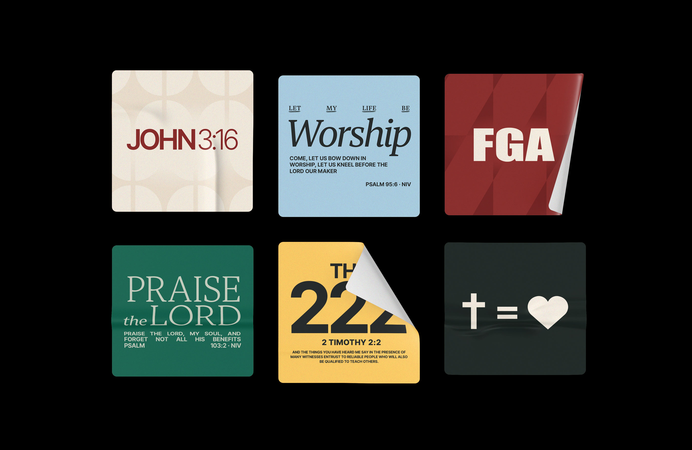
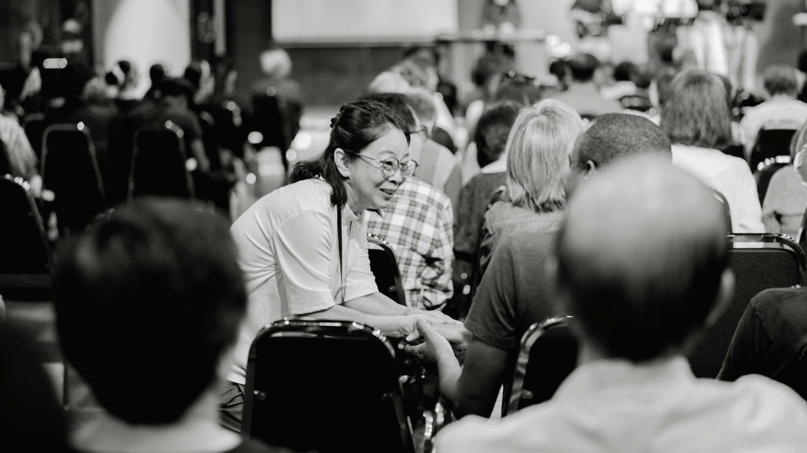